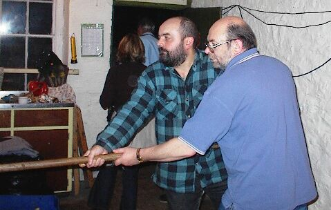

Le vyiër Flip yioûs nôs, tet éun homme, Bidèimme! Coumme y'en a bain d'aoûtres ach' teu, c'hest vrai; seull'ment n'yen a qu'un p'tit nombre t'chi s'saient tant portëts pour le ji, coumme l'boûanhoûmme ètat. Ah! Bi Djôve i n'ya pas à s'y trônpé. Ne v'la eun houmme pour dounné eunne déscripsion d'san caractèthe, t'chétet Loyat. Il avait eunne p'tite ferme, de viër eunne veingtaine de vréjiës d'terre; t'chil entret naîent entre li et sa belle seu, car sa femme tet au suéthe y'avait longtemps, c'hest à dithe vèthe! maîme ou y'étet d'vant l'jour de sn'enterr'ment et d'la pènne que Mait' Flip en eu, I juthi (car parfais I juthait) que jeanmais d'feamme à san conte n'erprendrët. Il est vrai aîtout, que l'boûanhoumme avait daîja attrapët sa souôssante siészième annaïe et i tet eun bôtchet tard pour li a s'èmathié, et d'maîme il avait adoptet sa belle seu pour s'entre souôgni, à t'chi pûs longtans vivrai, au pûs longtans t'cheindrai.
 Parmi l'zeanimaôux t'chi gardaient, Il avaient traîes belles grand vacques t'chétaient fraîch'man érnouvl'lëts: t'chi bâsyaient du lait chen'n'tët que craîme, eunne j'niche de dgiès-hui méis, eun viaôux à la kâniche, eunne juman, deûs trïes pyiènnes et eun grôs pendar de niër vétho en graisse. Ne v'la a peu prés le conte de lûs bestiaoûx, mais la pûs belle partie du méînage, ch'tet l'biaoûx gardein a poummiërs t'chi y'avait. Et las! Dët-Ouêlle, t'chi belles poummes de musé d'beu et d'musé d'brebis, et pis les gniër binet, les cadlines, les france, le roum'thi, le cap'yi, et eunne suaïe d'aoûtre belles sortes éd'poummes; ch'tet véthitablyement y'ieun des pûs biaoûx gardeins à poummiërs qu'nou pûsse véis dans l'vaîsiné.
Parmi l'zeanimaôux t'chi gardaient, Il avaient traîes belles grand vacques t'chétaient fraîch'man érnouvl'lëts: t'chi bâsyaient du lait chen'n'tët que craîme, eunne j'niche de dgiès-hui méis, eun viaôux à la kâniche, eunne juman, deûs trïes pyiènnes et eun grôs pendar de niër vétho en graisse. Ne v'la a peu prés le conte de lûs bestiaoûx, mais la pûs belle partie du méînage, ch'tet l'biaoûx gardein a poummiërs t'chi y'avait. Et las! Dët-Ouêlle, t'chi belles poummes de musé d'beu et d'musé d'brebis, et pis les gniër binet, les cadlines, les france, le roum'thi, le cap'yi, et eunne suaïe d'aoûtre belles sortes éd'poummes; ch'tet véthitablyement y'ieun des pûs biaoûx gardeins à poummiërs qu'nou pûsse véis dans l'vaîsiné.
Et pis! Pour érvénein au boûan-houmme. I n'tët pon crachaeûx d'sa sorte. I crachët sans doute, quant il avët eun couêpé d'pteun dans la goule, t'chi prannet souvent, coumme I disait pour lis d'aîgaji les flyieûmes de d'dans sn'estouma; ch'tët tout, mais pour aître bon és paoûvres; Itët là. Si t'chiqu'uns d'sés vaiseins éssaient v'nûs à la maîson d'mândé eunne goutte de lait, ou d'zéus, du cidre, ou poummes, ou maîme n'éimporte t'chi, Mait' Flip têt tréjous prêt à l'zoblyigi; s'i y'étët pôssiblye, de t'chi qu'les vaîseins y'avaîent coumme téstimônia; présentët eun biaoûx ouâquinne stique montet en argent, pour sn' affabillitet et san bouân t'choeu envers yieûx. Sa belle seu, étët tout à fèt l'contraithe l'yi; oull' éthet tet minn'dghi, ch'est à dithe finâsyiéthe, et d'habitude ch'tet en drièthe de l'yi, que'l 'boûan-homme dounnët tchi'q'chôse, car il tet là; san tchoeu étet chein qu'nou pouët app'lé du miyieu: et ch'tet là la raîson pour t'chi il avet gangnyi l'amiêtchi et l'respé de touôs les cheins t'chi l'counnaissaient.
Coumme j'ai daîja rapportët pûs haoût, Il aimët eunne bordaïe d'fann' de tans en tans de tchi qu'Marguérite (car ch'tet la l'nom de sa belle seu), le groumâchet souvent et lîs faisait de laïes grimaches, quant oull' viyët joûardé avec les jeannes jens du distri, et aîprouvait à l'zéncoûothagi contre san biaoûx frèthe, mais yieûx n'entendaient pon de cht'ouethèlle là; pûstôt que d'faithe du ma au bouânhoumme, I n'cherchaient que d'farces bouânnes pour joué à Margot (car I y'avaient bâsyi chu maînon là), et y'en avaient daîja jouët plus'yieurs faîs d'vant, chein t'chi faisët qu'ou les daîtestait accûo pûs; mais yieúx, les garçons d'lûs côtët, n'laimaîent pon enn'tou: Oull' avait tet la caoûse que l'Tom Baîkeur avait yieu l'ssa d'ssa hardèle, par rapport à des contes et d'faoûx brits, qu'oull' avait tet lis rapporté, et d'maîme, va t'chi fit eun ânguant miton mitainne entre yieûx, et i comp'yiotidrent entre touôs les garçons, qu'au preumi abord tch'il éthaient eunne chance, i l'y jouêthaient la pûs belle farce que jeanmais d'sa vie ou n'avet yieu: d'fête car ils aimaient touôs bain l'Tom, ch'tet li tch'étët lûs lîsdeur quand i voulaient avé eunne bordaïe d'pyaîsi.
Ervénons à Mait' Flip ach'teu, l'boûanhoumme! Dans san vivant, avait tréjous tët accouôtumet de faithe eunne boûanne paîlaïe d'gniër beuure touôs l'zans, siés li. I mettait vithon daeûs kar't'chiërs de poummes, et li t'chen avait tout plyiën siés li, I continuët sa vielle règlye d'annaïe en annaïe, pour avé san fanne coumme d'habitude. Enfein i s'adounni que chutte fais ichein, sa belle seu s'y oppôsi, et ch'fut avec bain du teintamâre, que l'pouôre vi parvèins à réussi d'avé sa taîte; car ch' n'tet pas qu'la vielle fûsse aoûtrement mârie pour le beurre, mais ou disët t'chi pouôraient l'faithe a lûs touôs seurs, sans avé d'monde a lûs aîd'ghi, et que tout l'profit s'nallait quand i fallët, coumme ou diset, bâsyi eunne dghichounnaïe de né, à eunne raccachïe d'sallopes, t'chi font la minne d'vôs aïd'ghi, et les servi d'gène et dgiaoûs d'vie, et l'zemplyi côumme des couôchons de bèthe et d'mangi; aprés tch'il ont la biélle et la vésie enfl'yiëts coumme eun grôs tambour, i n's'fiche pas mal de vous, i n'veulent pon moué nan! pourt'chi, I tchûl'buttaîent l'mûsé dans la paîle et n'en v'la l'raîsulta.
L'boûanhoumme! Pensi pourtant que chein qu'ssa belle seu vnët d'lîs dithe pouët aître vrai. I aîrpensi bain aîtout, que quant i fallët k'menchi à aîcraimé la paîle, pour emp'lyi ilo eunne quarantainne de bolëts d'quarte; i n'restët pûs que l'lait câsyi dans l'fond d'la paîle, pour yieûx. D'éun aoûtre côtet, il éthait bain coulu avé yieu touôs chés jeannes garçons la à aid'ghi; mais d'laoûtre bord, i savet bain et coumme i disait I m'en couôte eunne raide boûg' edd' pouôgnïe. Enfein, coumment s'y prendre pour poûé satisfaithe à touôs ses an'meins? Eh bain! Ne v'chéin le skîme t'chi preins: I s'arrangi d'ov' Marguérite, t'chill' en fs'saient daeûs paîllaïes, yieunne ach'teu et yieunne pûs tard, et t'chi prîethaient la maînt'chi d'la scouâde, à la prémiéthe, et l'aoûtre maîntchi à la derniéthe. En aîffet, chein t'chi fut fêt, mais nôs moustaflyiards quôequ'e y'en eu qu'la maînt'chi d'priëts et qu'lés daeûs divisions pathaissaient touôs contents, les pendloques avaient klobet ensemb'lye, pour joué la farce, tchil'avaient proméins à Margot. I voulaîent érvengi l'sör de Tom Baîkeur, et pis accûao mûs, i' s'adounnit que l'Dène E'l'Boutiyi, tch'étet daeûzième lîsdeur de la bande; fut preins pour la premiéthe paîlaïe, et l'pouôrre Tom n'en tet pas, mais l'accord entre touôs yieûs était fêt, I s'douttaîent bain t'chi n'en f'thaient pas de daeûsième paîlaïe; parcqu' Margot n'voudrët pon, Ch'n'tet pas au boûanhoumme tch'il en voulaient, ch'tet a la belle seu, quoé'qu' qu'ou verrëts pûs tard, que ch'fut li t'chân fut la dupe.
Ch'tët l'Maîcrédi en ervénant la sethaie termyiaïe, not' preumi démyié battâsyion entri, et fûdrent bain aîrchûs par les deûs vyiërs, Margot étët tout-à-fet côntente, et s'étët d'aîdghîsëts; il avaient maîme aîchangi d'habits, l'boûanhoumme avët l'zabïts d'ssa belle seu, et vice versa. Laoût' démyié battâsyion, était au d'guët dans l'gardéin en drièthe d'la tchuîsènne; là ouèst que l'gniër beure se faisait. Ch'tet dans eunn' apparteènn'ment tch'étêt bain p'tite, quand la paële tet sûs l'feu, avec le moueaûx, i n'yiavët du reun que pour deûs-persoûnnes. Les z'aoûtres t'chen 'apparténaient allaîent s'amuzé, lz'euns à joûé és cartes, les aoûtres à chanté, joûé d'la mûzique et dânsé. I y'avët eunne fénaître, t'chi s'adoûnnët justeman dans l'gardéin, et vis-za-vis d'la paële. L'appartènn'man, n'tët séimplyiéman qu'eunne elle au bu d'la grân maîson, et n'ou pouët d'charme greînpé à la chimm'naïe; ch'tet ichein tout praïs qu'laoût' démyié battâsyion faîsait l'dguët, pour aguevé la farce proméinse.
Aîcoutêts! chiérs lecteurs, li maîme, Mait' Flip, dans san temps, nôs a raccontët chein t'chets pôsët ichéin d's 'soûs.
Mes garçons, j'ai tant d'chagréin en vôs raccontant ch't'histouêthe ichéin, que maîme la veue m'en mouôlle quand j'véins a m'en ramémoûéthe. Ou viyïs; l'temps pâssët, j'tais accoûotumet a faîthe touôs l'zans eunne boûoyiaîtuthe de poummes, pour not' provision d'hivé, pour mé et ma belle seu, car je n'soummes que daeûs, et en maîme temps j'aîmais bain vés mes vyiërs z'anméins, vnéin lûs diverti deûse-traîes z'heuthes d'ov' mé, car je l'zaimaîs tous, mais maoûgret-mé j'en aî têt à la dupe. Je s'sîs vilannët pour l'réstâns d'més jours. Ne v'chéin coummaîqu' l'affaîthe se fît. J'méîmes la paële, à siés heuthes du matéin, pour la airdévallé de vyiër les siés heuthes le lend'main au matein. J'avons fait boûan feu tout l'jour, et quans veins l'ssé pour faîthe eun myîo d'fann' à nôs z'anméins, tch'avaient yieu la bontët de v'néïn nôs bâsyi eun cou d'main; je changîmes d'habîs mé et Marguérite, j'avais sa robe et san bannétte et l'yi, oull' avët ma k'méinse, braîes, veste et câsaque, chât'-chéun prannët sân tou à moûé, ôssi bain ma belle seu coûmme les aoûtres, mais quand véins mân tou, mé t'chi n'avais pon âccoûo mouët dépis que j'métais chângi, j'résti tout seu à moûé, et j'avais mân bannétte et ma robe, quans l'boûg'édd moûéaûx rompi en daeûs; la taîte têt vermoulûe et kottïe yioûs nôs, et accoûo eun grans boûnhéu pour mé, qué j'trouvi éunne vyiélle bréinge aûpi d'mé, de t'chi que par éun cou d'coléthe, j'yiavais aîrachi touôs les ouiss'keurs le jour de d'vans; Eh bain, j'vôs juthe que sans chu boug'édd ôti la l'paîlon éthët roussi coumme éunne fricachîe d'saoûsîches, quans i restent toutes cl'yïutëts dans l'fôn d'la kass'trolle; mais m'zaîfans ch'nest pas accoûo tout chein qu'jai à vôs raccônté, ch'est chein tchi m'arrivi en oprés. Nôs boûannes jeans étaient toûos otchupëts à lûs amûzé ensenblye, quândi que j'tais tou seu, et j'nôszais pas les diss'tôrbé, ch'tët justéman sûs l'heuthe de méin'gniët: car j'avais entandu l'alouôge du probitèthe sounné. J'antendi aîtou, coumme tchiq'zéuns marchi sûs les tuilles, mais j'ny fîs attension pou l'moman, mais dans p'tit' d'tans, mé v'la présqu' ockssi par la fumaïe; Jn'viyais pûs a moûé, J'crîyi au s'cour mais persounn' ne véindrent; j'antendi eunne vouaîe dans l'gardéin, en angl'yaîs t'chi dît, Gôs hanne! yioûs bloûeminne foûle, Lètte gôs! ennd' guîve éur é bloûeminne smèque inne eur bloûeminne tchâpsse: Dans éun clyéin d'yi, ne v'la l'beurre tchi fut préins à aîternué, que l'forteune partout, et i n'yen resti mèche dans boug'edd paële; L'zaîclyiâts volaient à droûette et à gaoûche, ôssi grôs coumme dés piéches de chéins frans. J'mé méins à j'nors, je n'poûais pus mé t'néin d'bu, et biaoûx fouôsyi pour la porte pour daîhallé, pas d'fichu craeûx à trouvé. J'mé meins à criyié, mais persounne ne v'naîent. J'antendais l'zaîclyiâs tchi volaient partou sûs man bannétte et ma robe! Dans mon tripo, je t'nais accoûo ma bréinge à ma main, et m'trouvi aîtchërfouchi sûs l'tâs d'bûches, ch'tët là m'zaîfans, ouèsqu' j'attrapi ma deûszième ouâppe. J'antendais éunne bouffade dans l'gardéin, et yiéun tchi disët Lètt' eur souétt'. J'm'aîrméins à criyié à rèdde brache, Plïze guiv' miè é ennd': mais i m'laissîdrent accoûo dans cht'éinferna bourbi la, j'aîrchu daeûs aîclyiâts dans la fache, et j'ut la pliche enraînchîe, coumme tchi pel'lêt éun coûôchon tout vivant. J s'sîs éun houmme tchuît, et accoûo bain pour mé, que j'nen et pas pûs. La tchuîsènne en fut smoutheuraïe partout, pliâstrage et aîthe. Quans mizanmeins véindrent m'trouvé, tout étet fini; j'tais dans éun aîta abominablye, et accoûo biaoûcou d'yieûs en riaient coumme des fôs. Ah! més garçons aîcoutêts mé: Si ou z'avets bésoûains d'gniër beurre, ne l'faîtes pon siés vous; prennëts m'n'avîs, car pour de mé jaimth'ais d'giâblyémen mûs l'accatté par la modghïe, ou la potaïe maîme! que jeanmais en r'faîthe d'aoûtre siés nous.
Pour vôs en fini, m'zaîfans, j'parvéimes à daîcouvri la caoûse de l'affaîthe. Ils avaîent cônplyîottêt ensemblye, de joûé eunne trique à ma belle seu, et mé alors tch' avët ses zabits, je fut justeman préins pour aître yi; le fët en est, i bouchîdrent la chimm'naïe avec eun bôtchët d'chiqu' tchi fët que j'fut presqu' aîtouffet par la fumaïe, et la raîson pour l'blèque botteur à aîclyîchi d'maîme, étët qu'les boug' edd' saligôts, avaient flyiân'tchi par la f'naître eun grôs boug'edd krèkueur, yious-nôs, éunne manîéthe de sqouîbbe à huit' ou dgiés neus, dans la paîlaïe d'beurre, tchi faît tchi n'tet pon ravissans qu'laffaithe saoutisse en l'air d'la manîéthe. Pour de mé, j'ai tet plûsyieûrs fais en dghèrre; més boûannes jeans, à la Krimaie, au Kappe, et à biaoûcou d'aoûtres, la ouès' qu'yavët d'fors cônbâts, mais d'pathèilles boug'edd mitrâsyieûses, de ma vie ni mé ni aûtchéunn' persoûnne n'ont veu; et cém' n'âge faoût ti qu'jen juthe en finissant m'n'histoûèthe, qu'ôssi bain vous coumme mé, il est à espèthe qu'jeanmais j'n'érvërrons patheille chôse s'arrivé, bidènne!
En souhaîttant à touôs m'zanméins, eun boûan Noûé et eunne boûanne nouvelle annaïe; ch'est à dithe eunne annaïe de jouaîe et d'prospêthitët. J'vôs salue.
L'ANMÉIN JEAN.
Chu 22 Novembre,
Mil-huit chents nonante chéïns!
 |
 |
 |
 |
 |
 |
Viyiz étout:
{kind=link}